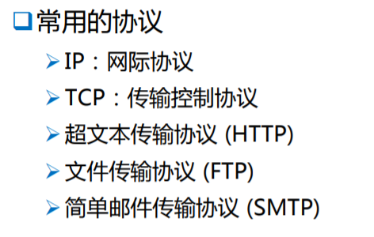

网络：一组网线连接的计算机。
网络的作用：
1.资源共享；
2.信息传输；
3.分布式处理；
4.综合信息处理。比如对货物的跟踪处理
internet:互联网
Internet：因特网,因特网是互联网众多网络中最大的一个。
www:万维网, 万维网是因特网的一个服务, 也就是我们常说的web网, 万维网这个服务的作用是使客户端可以通过浏览器去访问服务端的信息, 获得服务端的资源。对于英特网的服务来说, 除了万维网还有其他的, 比如文件传输的ftp, 还有邮件服务的,远程登录之类的服务
协议： 网络中计算机之间通信的规则。

IP：只要 在网络中的计算机遵循了IP协议, 就能进行信息的传输
TCP: 控制传输数据的准确性。所以遵循了TCP/IP协议, 不但能传输信息, 还能保证信息传输的准确性了。
HTTP: 可以通过超链接打开网页(通过超链接准确定位到网页)
FTP: 传输文件
SMTP: 传输邮件
-------------------------
IP地址：
标识 网络中 的一个通信实体。

网络编程用到的类都位于java.net包下。
下面有一个获取IP地址的类:

使用如下: 可以打印出本机的主机名和IP地址之类的信息(不过不知道为什么打印的是我的虚拟机的虚拟网卡的地址???)


端口号分布在 0~65535 之间, 前1024个端口是已经给tcp/ip预留的端口,已经预置相应的程序功能。
域名其实对应的也是一个IP地址(也可能是多个, 因为很多网站都有多台服务器),域名和IP地址的对应是通过域名解析器(DNS)来解析实现的。
我们可以通过IP地址找到我们要访问的那台服务器(或计算机), 但是要具体与该服务器里的哪个程序通信, 要通过端口号才能访问到。
域名不完全等于网址(URL), 有的网址很长, 带有很多"?"和"#"这样的符号, 那么这样的中的前半段才是真正的域名, 后面的"?"和"#"这样的内容已经对应于该域名中具体的某个资源了。
URL：统一资源定位符。

URL格式: protocol :// hostname[:port] / path / [?query]#fragment
protocol: 协议(如http)
hostname: 主机(可以是主机名或者是ip),表示的是资源所在的服务器
port: 端口,标识与主机上的哪个程序进行通信
path: 路径。比如访问的是哪个盘下的哪个文件或文件夹。
query: 指定查询字符串, 比如需要查询某个内容时可以直接指定
fragment: 片段。指定我们要查询的资源的具体的位置, 可以定位到某个文件的某一页的某个具体的段落。
上图中的相应的get方法就是相应的得到上面这些内容。举例如下:

打印结果如下:


可以直接将URL中的资源下载, 但要注意的是: 如果URL指向具体的资源,则下载的是具体的资源, 如果指向的是网页, 则下载的就是网页了。下图就是下载一张图片到本地磁盘的例子:

------------------------------------------------------------------------------------------------------------------------------------------------
网络编程: (基于tcp/ip协议)

基于tcp/ip的好处是传输数据非常准确, 坏处就是很容易阻塞, 因为如果接收数据的一端一直没有响应的话, 发送方会一直阻塞等待,
而基于UDP的话好处自然是不容易阻塞了, 因为发送方将数据发送出去后, 它就不管了, 也不管接收方有没有接收到,但这样的坏处就是不可靠。
所以tcp/ip传输速度总的来说是慢于udp的。
编写的程序有两种模式:
C/S
客户端 (即要装一个软件,如QQ)
服务器
B/S
浏览器
服务器


Socket类作为客户端, 客户端的功能用该类实现;
ServerSocket类作为服务器, 服务器的功能由该类实现
当设计Socket类时, 因为客户端需要访问服务器上的某个程序来请求资源,所以设计Socket类的构造方法时要让它传入两个参数, 一个是服务器的IP地址, 一个是端口号。下面的示例中, 是用自己的机器先模拟客户端和服务器, 成功之后,再部署到真正的服务器。记住: 服务器设置的端口要与客户端访问的端口一致。

ServerSocket在设计时,只需要设置自己的端口号就行, 因为它不需要访问别人, 而是等待别人来访问, 所以只要设置一个端口号, 让客户端们知道该通过哪个端口访问到服务器的对应程序即可。

Socket类和ServerSocket类是如何实现通信的?
还是通过流来通信的, Socket类和ServerSocket类底层都已经实现了socket流(是个字节流), socket流是一个双向流,包含连个流, 一个输入流一个输出流, 这两个类都实现了这两个流, 然后通过该流来进行通信
------------------------------------------------------------------------------------------------------------------------------------------------
基于 TCP协议的信息传输：
分为两类
Socket (客户端)
ServerSocket (服务器)
------------------------------------------------------------------------------------------------------------------------------------------------
用Socket类和ServerSocket类实现客户端和服务器之间的通信举例1:
对于客户端来说, 所有输入流读的就必然是服务器, 所有输出流就必然输出到服务器。
对于服务器来说, 所有输入流读的就必然是客户端, 所有输出流就必然输出到客户端。
而不是像以前的输入输出流一样, 从磁盘输入, 或者输出到磁盘或控制台。


客户端要与服务器真正通信上, 要保证客户端和服务器用的流是完全一样的流才行, 两者读到消息才能顺利解析(只要求底层流(socket流)一致即可, 不要求包装流也一样, 因为真正进行数据读写时就是底层流, 所以真正负责写出去的流就是底层的流 通过该流来传输数据, 包装流的信息是不会写出去的。读的时候也一样)。
但服务器并不是收到客户请求就直接获得一个socket流, 而是要通过三次握手后才获得(服务器通过ServerSocket的accept()方法进行三次握手并返回一个socket流)。如果三次握手没有成功, accept()方法是会一直阻塞的, 是不会返回一个socket流的。
注意 这两个程序运行时, 要先启动服务器, 再启动客户端, 不然客户端找不到服务器,会抛异常。
可以再新加一个控制台窗口, 两个控制台窗口, 一个放客户端, 一个放服务器。
新加方法如下:

将两个控制台摆放好位置后,启动服务器和客户端。并通过下面两个小按钮分别调出客户端和服务端各在一个控制台窗口, 并且固定住, 不让它们每从键盘输入一次窗口就发生变动。
首先服务器输出的两条语句客户端收到了, 如下图绿框。其次, 在客户端依次输入hello、hi, 服务器都会立刻将结果打印出来(因为流一直开着, 所以他们能保持通信, 相当于有一个通道), 等客户端输入end时, 客户端和服务器都关闭了流, 程序运行结束, 如下图蓝框。

------------------------------------------------------------------------------------------------------------------------------------------------
用Socket类和ServerSocket类实现客户端和服务器之间的通信举例2:
对举例1进行改进: 实现多个客户端和一个服务器通信。

如果不用多线程的话, 那就是每个客户端依次和服务器通信。此时客户端的代码是不需要改的, 因为每个客户端都需要具备举例1中的功能, 而服务端的代码是需要改的, 但也很简单, 把原先处理客户端请求的代码全部放到一个循环里, 这样就能处理完一个客户端请求, 就关闭一个客户端的流,接着处理下一个客户端,如下图。从这里可以看出, 服务器是不创建新的socket流的,它只是接收了从客户端过来的流, 服务器和客户端共享着同一个socket流用来通信, 就像是一个通道。所以服务器进行关流的操作关的还是客户端的流, 而不是服务器自己的流。所以服务器和客户端都有权利可以结束通信。

再添加一个控制台窗口, 然后启动服务器,run一下Server.java, 再run两下Client.java启动两个客户端, 如下图, 两个客户端虽然是同一个类运行的, 但是运行的时间不一样, 所以创建的Socket客户端对象也不一样。
可以看到每个客户端是顺序访问服务器的,直到输入了end,下一个客户端才能访问服务器, 否则会一直被阻塞。

------------------------------------------------------------------------------------------------------------------------------------------------
用Socket类和ServerSocket类实现客户端和服务器之间的通信举例3:
再对举例2进行改进: 用多线程的方式实现多个客户端和一个服务器通信, 以实现可以同时通信, 而不是依次通信。
要实现同时通信, 我们要意识到一个问题, 就是为什么举例2中不能同时通信, 就是因为每个客户端有不同的socket, 而服务器只有一个线程的话,服务器一次只能保持连接一个socket流, 只有等当前socket流关闭后, 服务器才能接收下一个客户端的socket流, 所以现在的方法就是服务器创建多个线程, 每个线程接收一个客户端的socket流, 就能实现一个服务器与多个客户端同时通信了
相对于上一版的变化也就是将上上图中红框中的代码,除了第一行,其余全部放在了线程类的run()方法中。将这些代码不再循环执行而是每个线程只执行一遍, 主方法的while(true)循环体里则变成了只需循环创建线程即可。

控制台的配置同于举例2,先启动两个客户端, 再启动一个服务器: 可以看到两个客户端已经可以同时和服务器通信了。其中一个客户端发送一条消息给服务器后, 服务器立刻收到,打印出来, 紧接着另一个客户端发送一条消息给服务器, 服务器又立刻打印, 原先那个客户端再发送一条,依旧可以迅速打印出来,如下图蓝框和绿框。

------------------------------------------------------------------------------------------------------------------------------------------------
用Socket类和ServerSocket类实现客户端和服务器之间的通信举例4:
在举例2的基础上实现如下例题:

代码如下:
改的主要是服务器, 客户端只是把前面例1的客户端代码整合了一下: